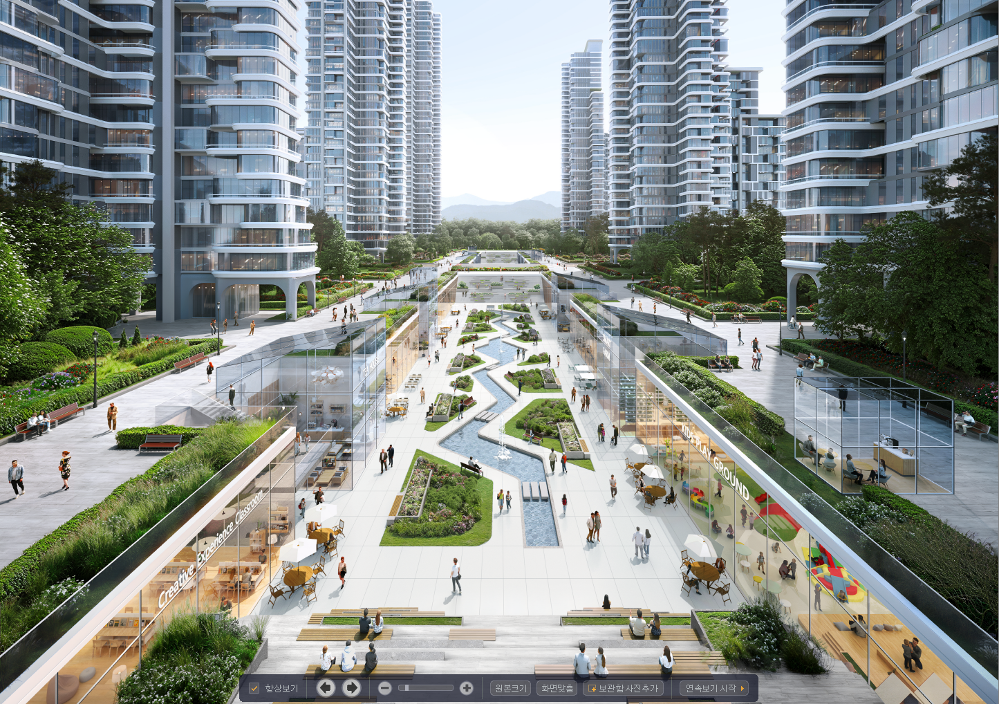
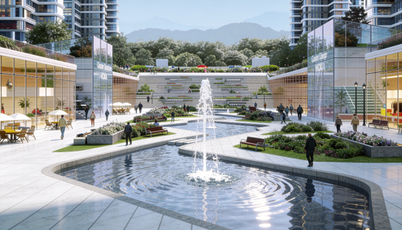
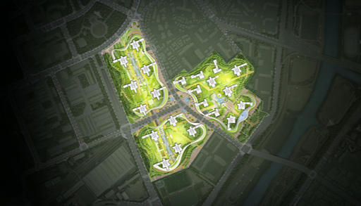
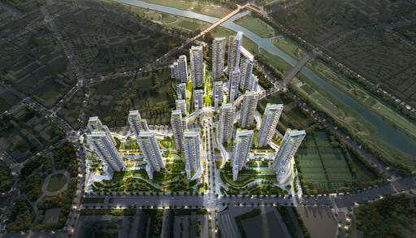

Step A · 대안 · 추천
Claude,
대안 만들고 추천
- 입력
- 대지 · 법규 · 주동 라이브러리
- 탐색
- 법적 조건 안에서 대안 자동 생성
- 출력
- 추천안들 → 한 안 선택
ActorClaude
본부에서 AI를 실제로 어떻게 쓰고 있는지,
두 가지 사례로.
하나는 규모검토 · 매스, 다른 하나는 이미지 · 영상.
분당 재개발 · 목동 재건축 적용.
대지 · 법규 · 주동 라이브러리를 주면 Claude가 명령만으로 배치안 비교 → Rhino 매스까지.
한 장의 이미지를 다른 연출 · 다른 각도, 나아가 짧은 영상까지 몇 분 안에.
더 빠르게 검토하고, 더 정확히 비교하고, 더 적은 인원으로. 사람은 중요한 판단과 기획에 집중.
초기 규모검토부터 시각화까지 한 흐름으로 묶어 최단기간에 마무리. 발주처 대응과 의사결정 리드타임 단축.
사람이 놓치기 쉬운 대안과 수치 계산을 AI가 빈틈없이 커버. 정량 비교로 판단 근거가 단단해지고 누락 · 오류가 줄어듦.
반복 계산 · 도면 · 수정을 AI가 자동화. 같은 결과물을 더 적은 인원으로.
초기 규모검토부터 시각화까지 한 흐름으로 묶어 최단기간에 마무리. 발주처 대응과 의사결정 리드타임이 줄어듦.
사람이 놓치기 쉬운 대안과 수치 계산을 AI가 빈틈없이 커버. 정량 비교로 판단 근거가 단단해지고 누락·오류가 줄어듦.
반복 계산·도면·수정을 AI가 자동화. 같은 결과물을 더 적은 인원으로 — 인건비·외주·야근이 함께 감소.
"선택안을 라이노로 열어줘." → 층수대로 매스 · 창문 모듈이 채광면에.
법규와 주동 라이브러리 안에서 자동 탐색 · 추천안 도출.
추천안을 MCP가 Rhino로 — 매스 · 창까지 시각화.
Claude를 다른 프로그램과 잇는 다리. Rhino · CAD를 한 줄로 제어.
법적 조건을 규칙으로 두고 대안을 자동 탐색,
정량 지표로 추천안까지.
프롬프트 한 줄이면 Rhino가 매스와 창까지.
설계자는 결과 검토에 집중.
"선택안을 라이노로 열어줘."
→ 층수대로 매스 · 창문 모듈이 채광면에.
DXF 2 레이어로 설계 가능 영역을 Claude에 전달
Claude는 이 조건 안에서만 대안 생성
기존 사례를 미리 등록 → Claude가 참고
DXF 2 레이어만으로 설계 가능 영역을 Claude에 전달.
Claude는 이 조건 안에서만 대안을 생성합니다.
기존 사례의 평형 · 조합을 Claude가 선택 · 회전 · 조합.
분당 재개발 · 채광이격 실시간 검증으로 한 안 선정.
CAD 선을 가져와 라이노 매스에 정렬 — 두 프로그램을 한 줄로.


상업지역 · 채광이격 미적용, 두 조건 동시 만족이 핵심.
남향 · 바다 조망 정량 기준으로 한 안을 골라, 같은 프롬프트로 매스까지.


내부 CG 투시도 한 장으로, 다른 각도까지 AI로 생성하고 Kling으로 영상까지.




반복 작업이 줄면, 비용이 줄고, 사람은 판단에 집중.
수십 개 배치안을 자동 생성 · 정량 기준으로 순위
Rhino 매스와 창까지 · 투시 · 짧은 영상 즉시
사람은 판단과 소통에 집중할 시간 확보
AI가 탐색할 "회사 기준 · 법규"를 설계자가 세팅
지구단위 · 주변 맥락을 읽고, 프로젝트 성격에 맞는 안 결정
발주처 · 인허가 · 팀 소통은 여전히 사람
대지 · 법규 · 주동 라이브러리 → 안 비교 → Rhino 매스
투시 · 짧은 영상 · 발주처 소통 가속
지금은 각 단계별. 다음은 하나의 흐름으로 통합
주차 · 일조 · 용적률 등 법규 자동 검증까지 이어지는 프로세스 구축
매스 · 확정안을 BIM 모델로 연결, 평면·입면·단면 도면 자동 생성까지 AI로 확장
이상으로 발표를 마치겠습니다.
앞으로도 더 나은 방향으로 계속 발전시키겠습니다.